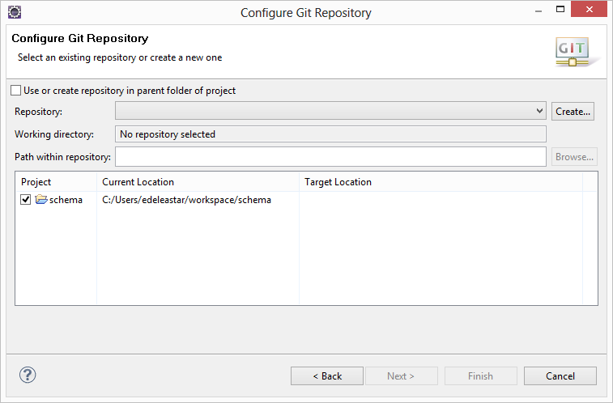

Set up a repository for a Play project in eclipse and progressively introduce and commit new features. Review the repository in Sourcetree and push the repository to bitbucket - a cloud provider of git services.
Download and install git on your pc:
(You should have this completed from last lab)
When this has completed, install sourcetree on your PC
Again, accept the default settings. During the install you will be asked to enter your full name + email.
Locate your current workspace folder and create a new play project called 'schema':
play new schema
Change into the newly created project, and eclipsify it:
cd schema
play eclipsify
Now import into eclipse - your project should look like this:
Run the project:
play run
Browsing to local host:
Change the template views/Application/index.html
#{extends 'main.html' /}
#{set title:'Home' /}
<p> Hello From Play! </p>
and refresh the page:
Create a new file in your project folder called '.gitignore'. The file should contain the following:
# Ignore all dotfiles...
.*
# except for .gitignore
!.gitignore
!.classpath
!.project
# Ignore Play! working directory #
war
db
eclipse
lib
log
logs
modules
precompiled
project/project
project/target
crud/*
data/*
conf/crud/*
conf/cloudbees*
public/crud/*
target
tmp
test-result
server.pid
*.iml
*.eml
You may need to use notepad to create this file.
In eclipse, select the schema project in project explorer, right click and select 'Team->Share Project'.
Select Git and press Next:

Select 'Use or create project in parent folder of project'
Then highlight the project location, and press 'Create Repository'.
If all goes according to plan, your project will look like this:
The workspace looks the same, except many of the artifacts have a question mark associated with them. This means that, although the project is under revision ('git') control, the annotated artifacts are no yet under control.
To place all of these projects into git, right click on the project and select "Team->Commit":
Make sure all files are selected, and enter the comit message as shown above. Press 'Commit', and the project will now look slightly different:
These revised icons indicate that the files are now under git control.
We will now rebuild the project from Lab09, except this time we will commit each modification to git. Furthermore, we will commit these changes in stages, with suitable commit messages. In a later step we can inspect these messages and even revert to earlier versions if we wish.
Create these two model classes in models:
package models;
import javax.persistence.Entity;
import play.db.jpa.Model;
@Entity
public class Player extends Model
{
public String name;
public Player(String name)
{
this.name = name;
}
public String toString()
{
return name;
}
}
package models;
import javax.persistence.Entity;
import play.db.jpa.Model;
@Entity
public class Club extends Model
{
public String name;
public Club(String name)
{
this.name = name;
}
public String toString()
{
return name;
}
}
Bring in these (empty) test cases into test
import org.junit.*;
import java.util.*;
import play.test.*;
import models.*;
public class PlayerTest extends UnitTest
{
@Before
public void setup()
{
}
@After
public void teardown()
{
}
@Test
public void testCreate()
{
}
}
import org.junit.*;
import java.util.*;
import play.test.*;
import models.*;
public class ClubTest extends UnitTest
{
@Before
public void setup()
{
}
@After
public void teardown()
{
}
@Test
public void testCreate()
{
}
}
Run the project in test mode:
play test
and verify that the test and admin consoles appear:
This complete the 'walking skeleton' phase.
Look carefully at the project workspace:
Note the different icons.
Now we can commit the "walking skeleton" revision to git. Right click on the project and select 'Team->Commit'.
Be sure to select the new files you added as shown above. Also enter the commit message as shown.
Press 'Commit' and the workspace will look a little different:
Note the change in the icons.
We now have two versions of the app committed to git - the initial version generated by play and then the walking skeleton we have just committed. Both of these version can be recovered. Try this:
Right click and select 'Team->Show in History':
This shows the two versions of the project we have committed to date. Note the 'id' and comment. We will come back to this view a little later.
Extend the Player class with this utility method:
public static Player findByName(String name)
{
return find("name", name).first();
}
and this in club:
public static Club findByName(String name)
{
return find("name", name).first();
}
We can now replace the skeleton (empty) tests with these simple tests:
import org.junit.*;
import java.util.*;
import play.test.*;
import models.*;
public class PlayerTest extends UnitTest
{
private Player p1, p2, p3;
@Before
public void setup()
{
p1 = new Player("mike");
p2 = new Player("jim");
p3 = new Player("frank");
p1.save();
p2.save();
p3.save();
}
@After
public void teardown()
{
p1.delete();
p2.delete();
p3.delete();
}
@Test
public void testCreate()
{
Player a = Player.findByName("mike");
assertNotNull(a);
assertEquals("mike", a.name);
Player b = Player.findByName("jim");
assertNotNull(b);
assertEquals("jim", b.name);
Player c = Player.findByName("frank");
assertNotNull(c);
assertEquals("frank", c.name);
}
@Test
public void testNotThere()
{
Player a = Player.findByName("george");
assertNull(a);
}
}
import org.junit.*;
import java.util.*;
import play.test.*;
import models.*;
public class ClubTest extends UnitTest
{
private Club c1, c2, c3;
@Before
public void setup()
{
c1 = new Club("tramore");
c2 = new Club("dunmore");
c3 = new Club("fenor");
c1.save();
c2.save();
c3.save();
}
@After
public void teardown()
{
c1.delete();
c2.delete();
c3.delete();
}
@Test
public void testCreate()
{
Club a = Club.findByName("tramore");
assertNotNull(a);
assertEquals("tramore", a.name);
Club b = Club.findByName("dunmore");
assertNotNull(b);
assertEquals("dunmore", b.name);
Club c = Club.findByName("fenor");
assertNotNull(c);
assertEquals("fenor", c.name);
}
@Test
public void testNotThere()
{
Club a = Club.findByName("george");
assertNull(a);
}
}
Bring these into the project and verify that the tests pass. Note the status of project, particularly this icons indicating which files have been changed.
This is a reasonably significant feature - so will commit it to git. Right click on the project, select 'Team->Commit':
This time we are not adding any new files, just changes to existing files. Try to notice the indicators in the project changing after the commit.
We now have three 'commits' in the history view:
Introduce a one-to-many relationship between club and player.
First, introduce the following imports into Club:
import java.util.ArrayList;
import java.util.List;
import javax.persistence.CascadeType;
import javax.persistence.OneToMany;
Then extend the Club class with this new attribute:
@OneToMany(cascade=CascadeType.ALL)
public List<Player> players;
Make sure the constructor creates this attribute:
public Club(String name)
{
this.name = name;
this.players = new ArrayList<Player>();
}
... and this method:
public void addPlayer(Player player)
{
players.add(player);
}
To verify the relationship, we introduce some new fixture into ClubTest:
private Player p1, p2, p3;
rework the setup method to create these objects:
@Before
public void setup()
{
p1 = new Player("mike");
p2 = new Player("jim");
p3 = new Player("frank");
c1 = new Club("tramore");
c2 = new Club("dunmore");
c3 = new Club("fenor");
c1.addPlayer(p1);
c1.addPlayer(p2);
c1.save();
c2.save();
c3.save();
}
and we bring in these new tests:
@Test
public void testPlayers()
{
Club tramore = Club.findByName("tramore");
assertEquals (2, tramore.players.size());
Player mike = Player.findByName("mike");
Player jim = Player.findByName("jim");
Player frank = Player.findByName("framk");
assertTrue (tramore.players.contains(mike));
assertTrue (tramore.players.contains(jim));
assertFalse (tramore.players.contains(frank));
}
@Test
public void testRemovePlayer()
{
Club tramore = Club.findByName("tramore");
assertEquals(2, tramore.players.size());
Player mike = Player.findByName("mike");
assertTrue(tramore.players.contains(mike));
tramore.players.remove(mike);
tramore.save();
Club c = Club.findByName("tramore");
assertEquals(1, c.players.size());
mike.delete();
}
Save everything, and verify that the tests all pass.
Now that the tests pass, commit the modifications to git. See if you can visual locate the (2) changed files first, and then commit them with the commit message "Club/Player one-to-many relationship with tests"
Your history may now look something like this:
The repository - which contains all versions of your project, can be inspected in any tool that understands git. Open the Souretree tool you just downloaded.
In Explorer/Finder, drag and drop your project folder (schema) into the left hand pane. The project should now be browsable as follows:
Take some time to explore each of the 'commits'. In particular, examine the how you can explore each revision, each file and the changes made to each file. These changes are shown visually in the bottom right (depending on which commit/file you select).
Create a free account on this service here:
Once logged in, create a new Repository, and call it schema:
This should lead you to this screen:
On the top right, select 'clone' - and in the drop down select 'HTTPS' as shown here:
We are interested in extracting the path form the text field. It may look something like this:
https://edel020@bitbucket.org/edel020/schema.git
(on your account, edel020 will be your bitbucket username).
Copy this string to the clipboard. Back in Sourcetree, right click on 'Remotes' and select "New Remote":
Select 'Add'
and paste in the url we copied from bitbucket. Now select master and press 'ok'
Your local repository is now associated with the repository you created on bitbucket. The next step is to 'push' your local change to the remote copy. Press the 'Push' button. You will be asked for your password in this step. After a few minutes your repository will be replicated on the bitbucket servers.
Browse the project on bitbucket:
In particular, have a look at the "Commits" view. It provides a more comprehensive view of all of the changes associated with a particular commit.
We will establish a relationship from player to club - making the existing association bi-directional
Change the OneToMany mapping in Club
@OneToMany(mappedBy="club", cascade=CascadeType.ALL)
public List<Player> players;
and also the addPlayer method:
public void addPlayer(Player player)
{
player.club = this;
players.add(player);
}
Introduce this import:
import javax.persistence.ManyToOne;
..and this attribute:
@ManyToOne
public Club club;
and a new test to verify the relationship:
@Test
public void testPlayerClub()
{
Player mike = Player.findByName("mike");
assertNotNull (mike.club);
assertEquals ("tramore", mike.club.name);
}
Run the tests to make sure everything is as expected.
Remaining in eclipse, commit the changes we have just made with the commit message 'Bidirectional Club/Player association'.
Still in Eclipse, select "Team->Push to Upstream" (you will be asked for your password). This will push the most recent commit to your bitbucket repository. Browse to the bitbucket repo now and verify that the commit has worked. In particular look for the most recent commit message + changes.
It should look something like this:
Reverting to an earlier revision - without loosing later versions - is one of the key benefits of using git. We will try now to revert to a version of the project before we introduce the relationship between Club and Player. Locate the 'Repositories' view in eclipse:
We have 5 versions of the app in the repo. Note each of them has an id, message, author, date etc...
Suppose we want to revert to the previous version - the one with the message 'Club/Player one-to-many relationship with tests'. Before we do so, open the Model/Player class in the editor - and verify that the following line is in the Player class:
@ManyToOne
public Club club;
In the "History" view, right click on the previous version, and select 'Checkout'
You should notice that the player class now looks like this:
package models;
import javax.persistence.Entity;
import play.db.jpa.Model;
@Entity
public class Player extends Model
{
public String name;
public Player(String name)
{
this.name = name;
}
public String toString()
{
return name;
}
public static Player findByName(String name)
{
return find("name", name).first();
}
}
Also notice that the 'HEAD' tag in history is associated with the previous version:
Verify that the tests are also testing the previous version.
Our very last set of changes (Bidirectional Club/Player) have not been lost however. Right click on that version in history, and 'Checkout' again, will see those changes reintroduced.
package models;
import javax.persistence.Entity;
import javax.persistence.ManyToOne;
import play.db.jpa.Model;
@Entity
public class Player extends Model
{
public String name;
@ManyToOne
public Club club;
public Player(String name)
{
this.name = name;
}
public String toString()
{
return name;
}
public static Player findByName(String name)
{
return find("name", name).first();
}
}
Check out and execute each version of the schema app, one at a time. Verify that each version is as expected
Using sourcetree, see if you can check out earlier versions of the app, to different folders. See if you can have several versions of the project, side-by-side, on your pc.
See if you can create a repository for a standard java application - perhaps your current programming assignment (as opposed to a Play app). Explore the repository both in eclipse and sourcetree.
Get the bitbucket name of one of your classmates. Find out how to share one of your repos with them.